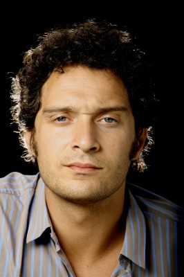

#10495 Agata und der Sturm
Alternativ: Agata and the Storm (Englischer Titel)

 IMDB-Wertung: 6.6 / 10
IMDB-Wertung: 6.6 / 10  Metascore: 0
Metascore: 0 
Agata, eine Buchhändlerin mit einer inneren Energie ausgestattet, die Glühbirnen und Computer oder auch Verkehrsampeln zum Durchbrennen bringt, verliebt sich in einen viel jüngeren Mann. Ihr vermeintlicher Bruder Gustavo, ein gut situierter Architekt, erfährt plötzlich, dass er adoptiert wurde. In der Person von Romeo, seinem echten Bruder, haben sie nun ein neues Familienmitglied. Romeo, ein Modevertreter, der auch privat hinter jedem Rock her ist, seine gelähmte Frau aber über alles liebt, bringt mit seinem Unternehmungsgeist ziemlichen Schwung in das Leben der beiden. Gustavo trennt sich von seiner Frau, die als Eheberaterin im Fernsehen jede Ehe retten kann, ihre eigene im wirklichen Leben aber zerstört. Er vernachlässigt sein Architekturbüro und fühlt sich sehr wohl dabei, wenn er mit Romeo ein Ausflugsparadies rund um einen Forellenteich plant. Agata ist Dreh- und Angelpunkt in dieser fröhlichen, bunten Sommerkomödie, die durchaus auch ernste Themen anreißt.
Jahr: 2004
Dauer: 62 Minuten
FSK: 0
Land: Italien Studio: TOBIS FilmTonspuren:
Untertitel:
Auflösung: SD (640x352) Größe: 698 MB
Genre: Komödie, Liebe
Regisseur: Silvio Soldini
Drehbuch: Doriana Leondeff, Francesco Piccolo, Silvio Soldini
Soundtrack: Giovanni Venosta
Darsteller:
- Licia Maglietta als Agata
- Giuseppe Battiston als Romeo
- Emilio Solfrizzi als Gustavo
- Marina Massironi als Ines Silvestri
-  Claudio Santamaria als Nico
 Giselda Volodi als Maria Libera
Giselda Volodi als Maria Libera- Monica Nappo als Daria
- Ann Eleonora Jørgensen als Pernille Margarethe Kierkegaard
- Fausto Russo Alesi als Ospite studio TV
- Alberto Bona als Dancer (uncredited)
- Christopher Dane als Danish Delegate (uncredited)
- Silvio Soldini als Spettatore al cinema (uncredited)
- Carla Astolfi als Geometra Mirabassi
- Elena Nicastro als Iole / hostess
- Remo Remotti als Generoso Rambone
- Andrea Gussoni als Benedetto
- Mauro Marino als Dottore
- Silvana Bosi als Romeo's mother
- Carlo Luca De Ruggieri als Elettricista
- Nicoletta Maragno als Conduttrice TV
- Ilaria Valli als Pittrice vernissage
- Mara Di Maio als Cameriera pub
- Roberta Lena als Proprietaria boutique
- Carlo Guain als Proprietario boutique
- Tatiana Lepore als Cliente con cagnolino
- Germana Venanzini als Cliente libro copertina
- Boris Vecchio als Cliente guida turistica
- Giovanni Sanguineti als Commesso libreria
- Folco Orselli als Cantante pub
- Piero Sidoti als Cantante bowling
- Andrea Allione als Cantanti ristorante
- Giancarlo Gentile als Cantanti ristorante
- Li Xiang Yang als Medico Cinese
- Luca Carboni als Collaboratore studio Gustavo
- Salvatore Pagano als Collaboratore studio Gustavo
- Grazia Togni als Collaboratore studio Gustavo
- Maurizio Patella als Infermiere
- Alessandro Schena als Ciclista
- Bruno Nicolas Gasparian als Maestro di ballo
- Enrico Campanati als Architetto Torregiani
- Miriam Lapai als Vecchietta con secchio
- Mario Affuso als Taxista
Datei: X:\2004(A-F)\Agata und der Sturm (2004, FSK0, 640x352) Teil 1.avi seit 16.01.2019
Festplatte: HD 2003-2004-2005(A-F)
 Es gibt insgesamt 39 Filme in der Gruppe '2004(A-F)'
Es gibt insgesamt 39 Filme in der Gruppe '2004(A-F)'